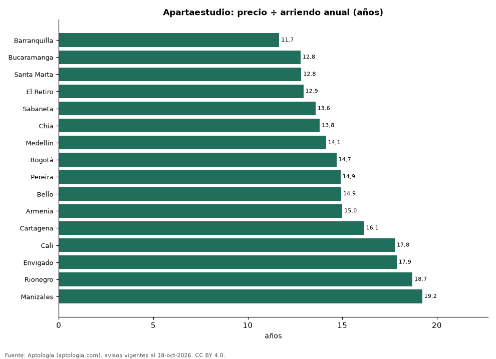

¿Comprar un apartaestudio para arrendar? Años de arriendo que vale un apartaestudio en 16 ciudades de Colombia (octubre 2026)
Estudio con datos abiertos (CC BY 4.0). Versión original: https://github.com/elbroker/aptologia-datos/tree/main/estudios/comprar-o-arrendar-un-apartaestudio-ciudades-colombia-2026 · DOI: 10.5281/zenodo.23475832
Un apartaestudio en Barranquilla cuesta lo mismo que 11,7 años de su arriendo (8,6 % de rentabilidad bruta), la relación más baja de 16 ciudades colombianas; en Manizales son 19,2 años. En Bogotá, 14,7 años: 335 millones de pesos de precio frente a 1,90 millones de pesos al mes.
Resumen: comparamos el precio y el canon medianos de 12.706 apartaestudios en venta y en arriendo en 16 ciudades.
Actualizado: 18 de octubre de 2026 (datos del 18 de octubre de 2026) · Próxima actualización: mensual.

Resumen
| Indicador | Valor |
|---|---|
| Menos años | Barranquilla: 11,7 |
| Más años | Manizales: 19,2 |
| Bogotá | 14,7 años |
Años de arriendo que vale un apartaestudio, por ciudad
| Ciudad | Precio apartaestudio (mediana) | Arriendo al mes | Años de arriendo | Rentabilidad bruta | Años (apto. 1 hab.) | Avisos (venta / arriendo) |
|---|---|---|---|---|---|---|
| Barranquilla | 280 millones de pesos | 2,00 millones de pesos | 11,7 | 8,6 % | 12,3 | 243 / 424 |
| Bucaramanga | 195 millones de pesos | 1,27 millones de pesos | 12,8 | 7,8 % | — | 100 / 77 |
| Santa Marta | 385 millones de pesos | 2,50 millones de pesos | 12,8 | 7,8 % | 14,4 | 345 / 47 |
| El Retiro | 497 millones de pesos | 3,20 millones de pesos | 12,9 | 7,7 % | 12,0 | 41 / 51 |
| Sabaneta | 350 millones de pesos | 2,15 millones de pesos | 13,6 | 7,4 % | 12,9 | 133 / 122 |
| Chía | 285 millones de pesos | 1,72 millones de pesos | 13,8 | 7,2 % | 14,7 | 118 / 88 |
| Medellín | 475 millones de pesos | 2,80 millones de pesos | 14,1 | 7,1 % | 13,6 | 900 / 2.055 |
| Bogotá | 335 millones de pesos | 1,90 millones de pesos | 14,7 | 6,8 % | 14,3 | 2.202 / 2.919 |
| Pereira | 340 millones de pesos | 1,90 millones de pesos | 14,9 | 6,7 % | 15,8 | 319 / 221 |
| Bello | 260 millones de pesos | 1,45 millones de pesos | 14,9 | 6,7 % | — | 33 / 58 |
| Armenia | 270 millones de pesos | 1,50 millones de pesos | 15,0 | 6,7 % | — | 291 / 115 |
| Cartagena | 484 millones de pesos | 2,50 millones de pesos | 16,1 | 6,2 % | 18,6 | 104 / 43 |
| Cali | 320 millones de pesos | 1,50 millones de pesos | 17,8 | 5,6 % | 13,3 | 327 / 479 |
| Envigado | 665 millones de pesos | 3,10 millones de pesos | 17,9 | 5,6 % | 15,5 | 86 / 176 |
| Rionegro | 494 millones de pesos | 2,20 millones de pesos | 18,7 | 5,3 % | 14,4 | 77 / 153 |
| Manizales | 300 millones de pesos | 1,30 millones de pesos | 19,2 | 5,2 % | — | 234 / 125 |
Precio de venta mediano ÷ (canon mensual mediano × 12) de apartaestudios; la última columna compara con apartamentos de 1 habitación.
Preguntas frecuentes
¿Es buen negocio comprar un apartaestudio para arrendar? Depende de la ciudad: en Barranquilla se paga con 11,7 años de arriendo y en Manizales con 19,2, antes de administración, impuestos y vacancia.
¿Cuánto renta un apartaestudio en Bogotá? 6,8 % bruto anual.
Metodología
- Fuente: exportes nocturnos de la base de datos de Aptología (aptologia.com) del 18 de octubre de 2026: avisos vigentes de vivienda en portales inmobiliarios de 13 países, recogidos por Aptología y vistos en línea entre el 11 y el 18 de octubre de 2026. Corte: 18 de octubre de 2026.
- Depuración: se eliminan duplicados exactos (misma ciudad, zona, tipo, precio, moneda, área, habitaciones y baños) y los precios fuera del percentil 1–99 de cada país, operación, moneda y tipo; el precio por m² usa solo avisos con área declarada entre 12 y 2.000 m² y también se recorta al P1–P99.
- Qué se mide: precios pedidos (publicados), no precios de cierre. En arriendo, el canon mensual sin administración, gastos comunes ni condominio.
- Muestra mínima: cada cifra publicada se apoya en al menos 30 avisos; las celdas con menos se omiten.
- Colombia: Precios en pesos colombianos, sin conversión de moneda.
- Años de arriendo para pagar la vivienda: precio de venta mediano ÷ (canon mensual mediano × 12), entre avisos del mismo tipo y celda; es la relación precio/arriendo (price-to-rent ratio) y equivale a 100 ÷ rentabilidad bruta. No incluye administración, impuestos, vacancia, financiación ni valorización: es una referencia para comparar comprar con arrendar, no una recomendación de inversión.
- Limitaciones: la cobertura depende de los portales que recorre Aptología en cada país y es mayor en las ciudades grandes y en los segmentos medio-alto y alto; el área es la que declara el aviso, sin verificar; los nombres de zona vienen de los portales.
- Privacidad: solo se publican agregados; no se publica ningún dato personal, enlace a avisos ni nombre de anunciante.
- Datos abiertos: datos.csv, licencia CC BY 4.0.
Cómo citar
Pinzón Pineda, D. M. (2026). ¿Comprar un apartaestudio para arrendar? Años de arriendo que vale un apartaestudio en 16 ciudades de Colombia (octubre 2026). Aptología (aptologia.com). https://github.com/elbroker/aptologia-datos/tree/main/estudios/comprar-o-arrendar-un-apartaestudio-ciudades-colombia-2026. Datos: datos.csv, licencia CC BY 4.0.